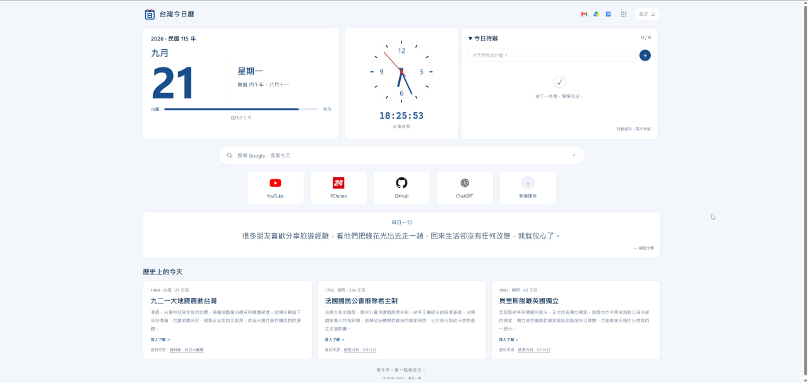
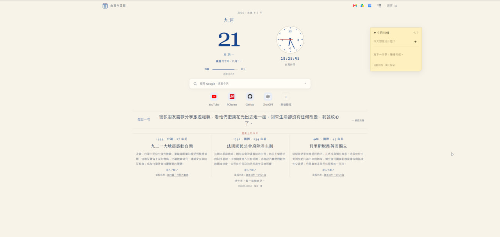
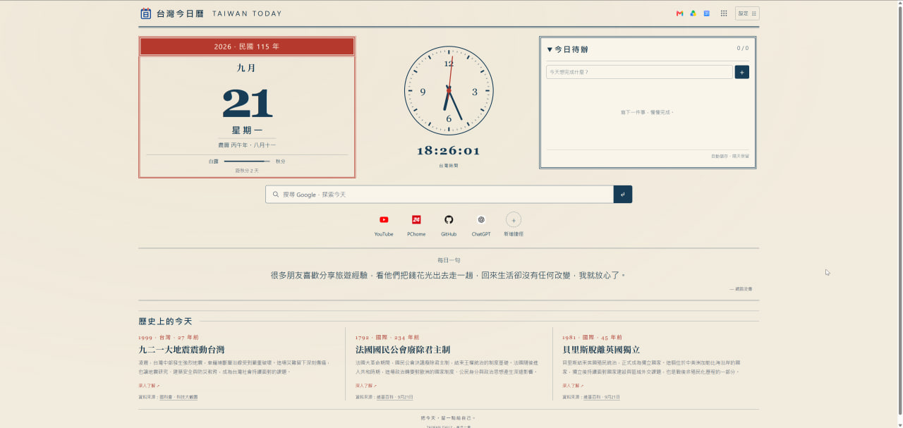
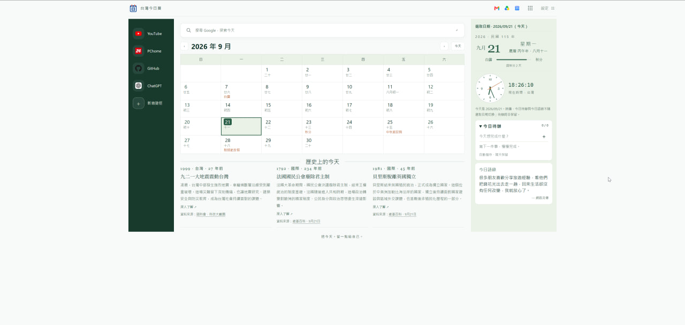
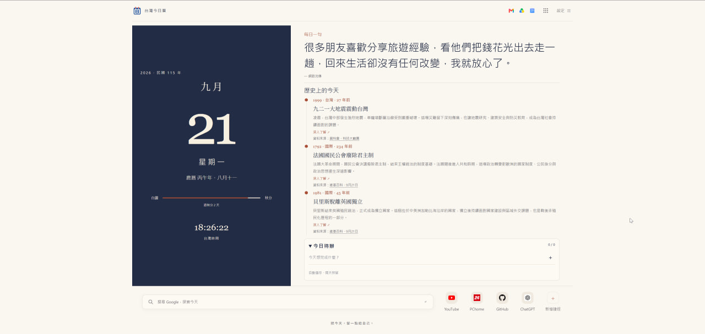

熟悉的日子，一起看
國曆、農曆、二十四節氣與民俗節日，搭配台灣時間時鐘。已收錄 2026、2027 年政府行政機關放假與連假資料。
台灣今日曆 · 為台灣設計的新分頁插件
日期、農曆、節氣與時間，一眼就能看見。記下今天的待辦、快速開啟常用網站，再讀一段歷史或一句提醒，從容開始每一天。
Chrome／Edge · 無須帳號 · 設定儲存在本機

國曆、農曆、二十四節氣與民俗節日，搭配台灣時間時鐘。已收錄 2026、2027 年政府行政機關放假與連假資料。
待辦跨日保留，搜尋與網站捷徑隨手可用。Gmail、雲端硬碟與 Google 日曆也能快速開啟。
讀台灣與國際的「歷史上的今天」，選擇喜歡的語錄分類。歷史、語錄、待辦與秒針皆可依習慣開關。
FIVE WAYS TO START YOUR DAY

留白與置中日期，安靜看見今天。
圓角卡片，整齊收納一天的資訊。

紙色與朱紅框線，熟悉的日曆味道。

整月展開，選一天查看節氣與歷史。

日期如封面，語錄與紀事慢慢讀。
2026/09/21 實際操作截圖，點圖可查看原尺寸。日期、紀事與捷徑依使用日期及個人設定而異。
READY FOR YOUR NEXT TAB
從 Chrome 線上應用程式商店安裝插件，開啟新分頁即可使用。日曆與內建資料可離線查看；搜尋、網站捷徑及資料更新需要網路。
也為自己的故事，留一個位置
除了內建歷史，你也可以加入生日、畢業、旅行或家族回憶。這是可自由使用的延伸功能，沒有匯入紀事也能完整使用日曆。
下載範本 → 填寫紀事 → 轉換並下載 JSON → 匯入日曆。
三種範本的欄位和範例相同，選一種即可。保留第一列表頭，把範例換成你自己的紀事。
選擇填好的表格，確認紀事後按「下載 JSON」。檔案只在你的瀏覽器處理，不會上傳。
選擇填好的表格，網站會幫你整理成日曆檔案。
| 欄位（英文亦可） | 填寫方式 |
|---|---|
| 日期 / date * | 09-21、9/21 或完整日期 2010-09-21；支援 Excel 日期儲存格。 |
| 年份 / year | 西元年，例如 2010。使用完整日期時可省略，兩者皆填須一致。 |
| 標題 / title * | 例如「搬進第一個家」。 |
| 摘要 / summary * | 記錄當天發生的事。 |
| 分類 / region | 自訂分類，最多 40 字，例如「童年」「中年」「公司名稱」「小孩名字」。空白會填入「個人」。私人紀事不必填台灣／國際；分類名稱不影響「私人」來源與優先排序。 |
| 關鍵字 / keyword | 選填；有填才會在插件顯示 Google「深入了解」。 |
| 來源 / source | 選填；例如「家庭相簿」，空白會填「私人紀事」。 |
| 來源網址 / sourceUrl | 選填；僅接受 HTTPS 網址，不必為私人回憶提供公開連結。 |
FAQ
不用。安裝後就能使用台灣日曆、時鐘、待辦、捷徑、內建歷史與語錄。有想紀念的日子時，再使用上方工具加入即可。
不用，選一種就好，內容和欄位都相同。平常用 Excel 可選 XLSX，用 LibreOffice 可選 ODS，也可以用 CSV。填好後交給上方工具整理，下載 JSON 再匯入插件即可。
可以。你可以填「童年」「中年」、公司名稱或小孩名字，最多 40 字；留白會使用「個人」。不論填什麼，匯入的紀事都屬於「私人」來源，不會變成公共歷史。
日曆會在紀事的同月同日顯示回憶，例如 6 月 15 日畢業，就會在每年的 6 月 15 日出現。也可以切換成「月序手帖」，選擇那一天查看。未來年份的紀事不會提前顯示。
請確認「設定 → 內容」已開啟「歷史上的今天」與「私人」來源；當天紀事較多時，按「顯示更多」就能查看其餘內容。
不會。按「匯入並取代」會換掉原本的全部個人紀事。建議保留一份完整表格，每次把新紀事加進同一份表格，再重新匯入。台灣、國際等公共歷史不受影響。
不會。官網轉檔與插件匯入都只在你的電腦處理，不會上傳或公開你的紀事。
在「設定 → 資料管理 → 匯入個人歷史」按「匯出目前紀事備份」，把下載的檔案保存好。到新電腦安裝插件後，再匯入這份備份即可。紀事不會自動同步；移除插件會清除原本儲存的紀事。
先看畫面提示的列數與原因，檢查日期是否存在、年份是否一致，以及標題和摘要有沒有填寫。網站會指出需要修正的地方，改好表格後重新選檔，再下載新的 JSON 即可。
資料有錯誤時不能確認匯入，原有紀事會保留。修正並儲存表格後，再選一次檔案即可。
PRIVACY POLICIES
個人紀事、待辦與設定保存在本機；官網轉檔不會上傳檔案。公共資料更新、搜尋與外部網站的連線方式，請見完整隱私權政策。